Main research · Ioffe Institute · with Dr. Sergei Balashev
Quasar 4C 04.81
Partial covering, Fe II excitation, and the limits of what absorption can reveal about an accretion disk.
The question
Can an absorber reveal the structure of the source behind it?
The quasar's light passes through structured gas, leaving absorption lines whose depths depend on both optical depth and the fraction of the emitting region covered. I fit these lines with Python and SPECTRO and test whether the inferred covering fractions reflect the gas's excitation, the source wavelength, or both.
The important distinction is between a measurement of effective covering and a reconstructed physical geometry. The quasar and absorber are not spatially resolved by these observations.
01 / Spectroscopic evidence
The Fe II absorption lines
Across the well-constrained Fe II fine-structure levels j = 0–5, the inferred effective covering fraction decreases with excitation index. Fits to selected joint profiles also favor treating the absorbing components separately.
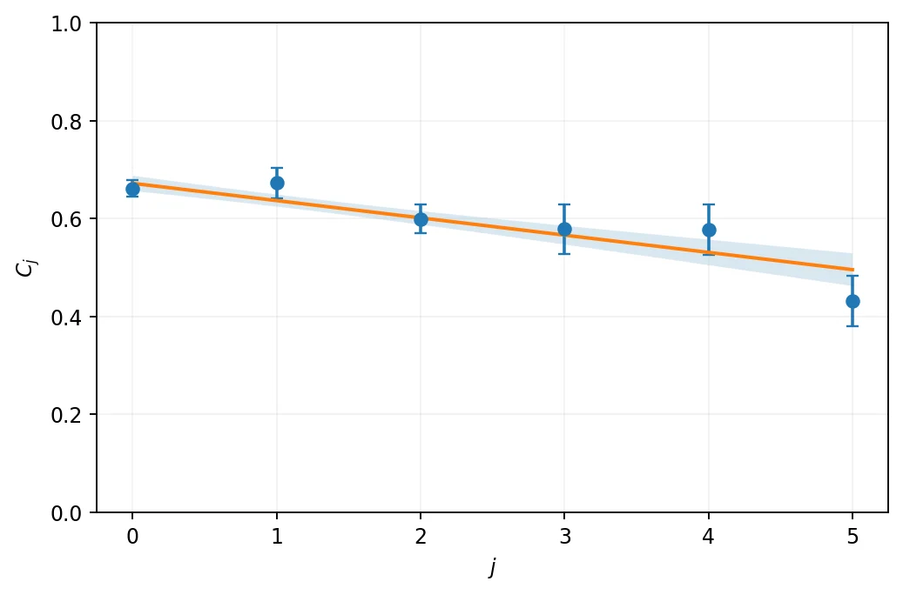
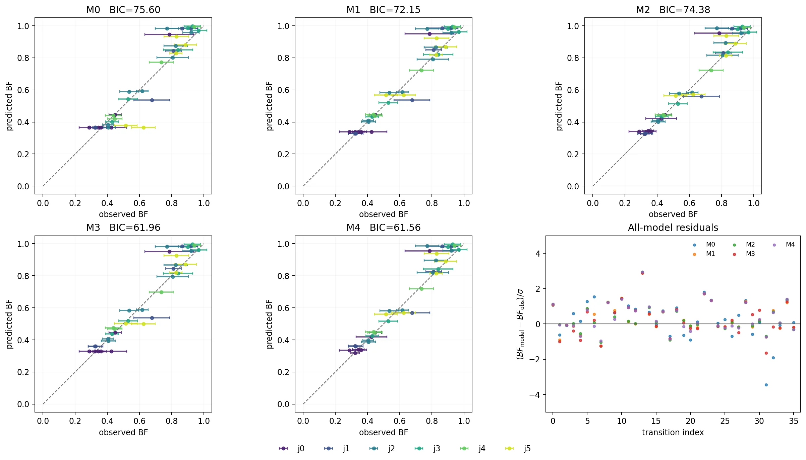
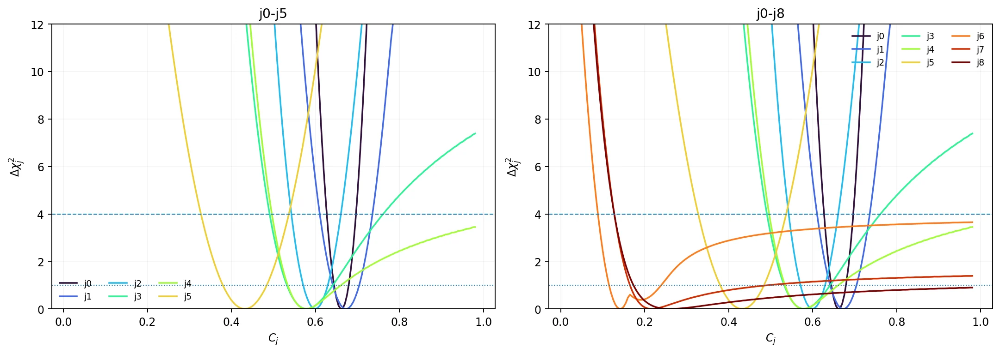
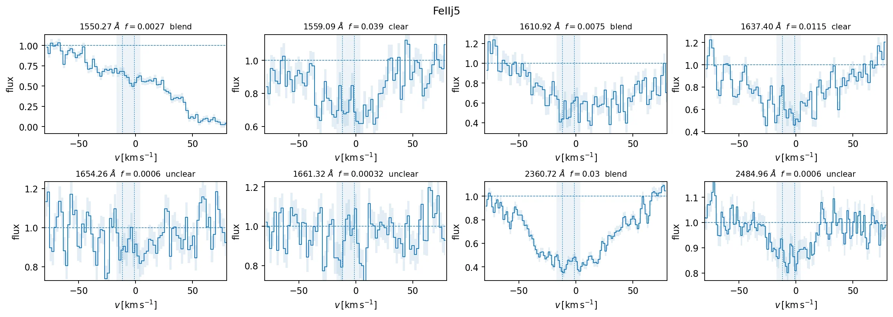
What the fits establish: excitation-dependent effective partial covering. What they do not yet establish: an independent wavelength-dependent Fe II covering law.
02 / Model checks
Testing the interpretation
The fit is only useful if it remains identifiable under alternate covering laws, line choices, and instrument effects. The charts below document part of that scrutiny; their numbers remain conditional on the adopted likelihood and line sample.
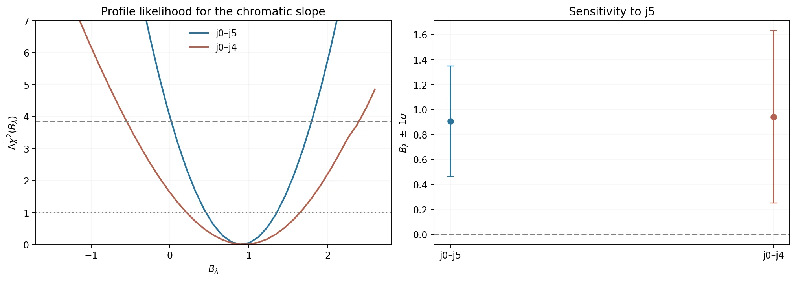
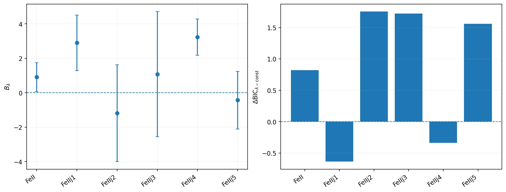
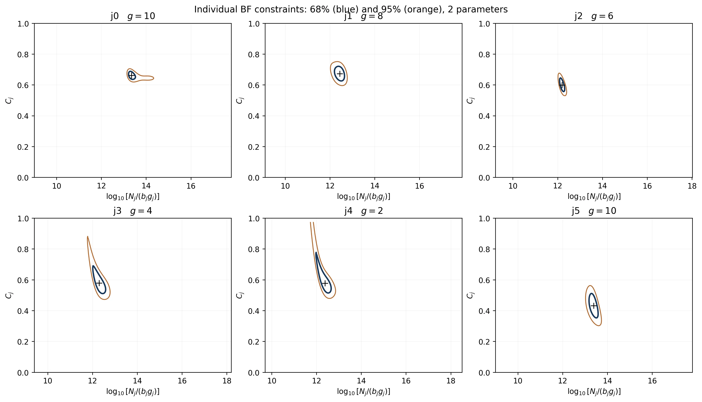
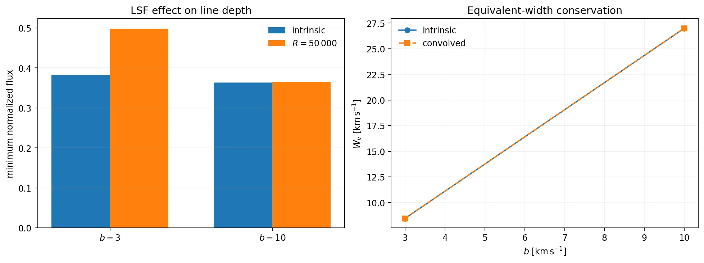
In an 830-pixel joint Fe II/Fe II* profile fit, the best completed component-specific covering model improved on the best shared-covering solution by ΔBIC ≈ 122. The continuum-based disk temperature exponent β = 0.571 ± 0.036 was obtained separately; it should not be attributed to the absorption-line fit.
03 / Spatial forward models
Disk and absorber geometry
Numerical disk-brightness maps test how an offset or stratified screen would change effective covering at different wavelengths. They are illustrative forward models—not directly observed maps or a unique 3D reconstruction.
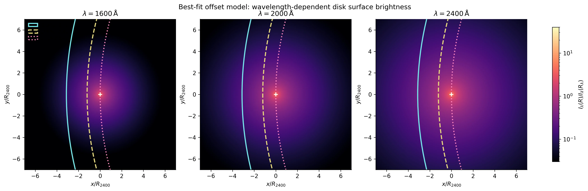
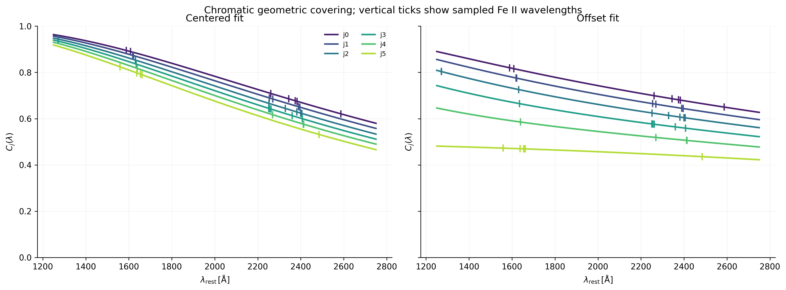
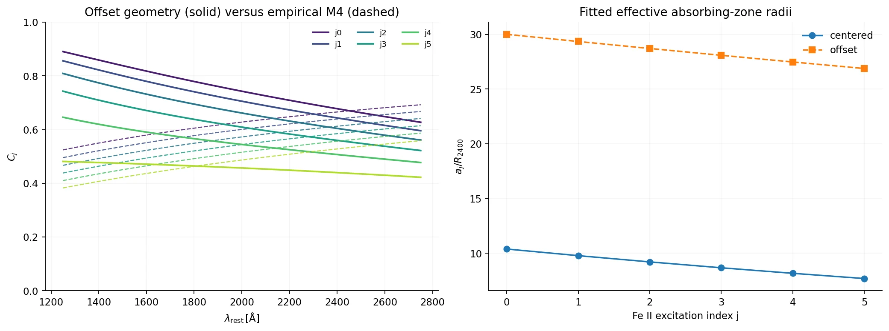
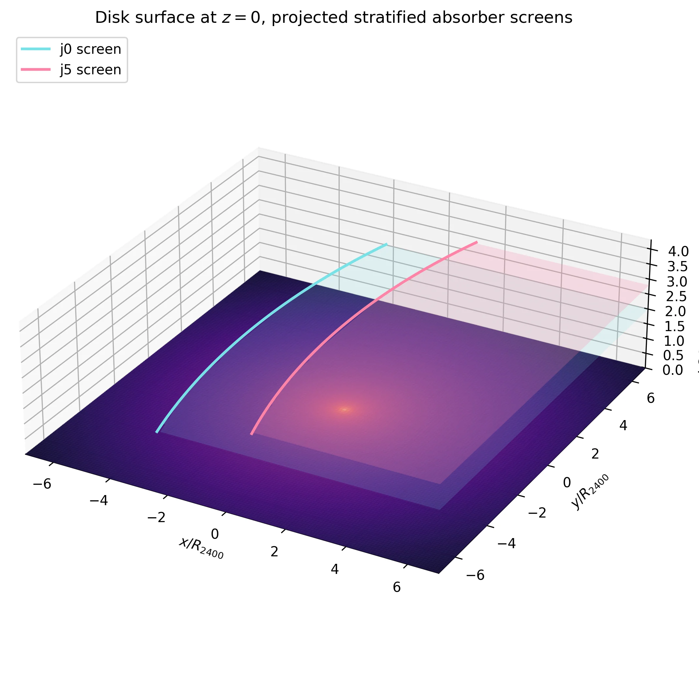
Interactive visualization
Explore the disk–absorber model in 3D
Optional self-contained interactive view of the numerical geometry. Its depth and absorbing-zone shapes are model assumptions, not a spatial reconstruction from the spectrum.
Current conclusion
What comes next
The next tests compare widely separated transitions sharing the same lower level, account for instrumental line spreading and blending, and link Fe II population calculations to the measured likelihoods. The radial opacity distribution and the disk temperature slope remain degenerate without additional assumptions or independent chromatic constraints.
Status: ongoing research. These are working results and numerical demonstrations, not a published measurement of the quasar's spatial structure.
Other research ↗Curriculum vitae ↗